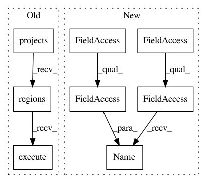

1bddafd3102e4e0841d78673581c3ead8f68a7c8,dataproc/submit_job_to_cluster.py,,wait_for_job,#Any#Any#Any#Any#,174
Before Change
def wait_for_job(dataproc, project, region, job_id):
print("Waiting for job to finish...")
while True:
result = dataproc.projects().regions().jobs().get(
projectId=project,
region=region,
jobId=job_id).execute()
// Handle exceptions
if result["status"]["state"] == "ERROR":
raise Exception(result["status"]["details"])
elif result["status"]["state"] == "DONE":
After Change
// Handle exceptions
if job.status.State.Name(job.status.state) == "ERROR":
raise Exception(job.status.details)
elif job.status.State.Name(job.status.state) == "DONE":
print("Job finished.")
return job
// [END dataproc_wait]
In pattern: SUPERPATTERN
Frequency: 3
Non-data size: 8
Instances
Project Name: GoogleCloudPlatform/python-docs-samples
Commit Name: 1bddafd3102e4e0841d78673581c3ead8f68a7c8
Time: 2019-05-20
Author: amancuso@google.com
File Name: dataproc/submit_job_to_cluster.py
Class Name:
Method Name: wait_for_job
Project Name: GoogleCloudPlatform/python-docs-samples
Commit Name: 1bddafd3102e4e0841d78673581c3ead8f68a7c8
Time: 2019-05-20
Author: amancuso@google.com
File Name: dataproc/list_clusters.py
Class Name:
Method Name: list_clusters
Project Name: GoogleCloudPlatform/python-docs-samples
Commit Name: 1bddafd3102e4e0841d78673581c3ead8f68a7c8
Time: 2019-05-20
Author: amancuso@google.com
File Name: dataproc/submit_job_to_cluster.py
Class Name:
Method Name: list_clusters_with_details